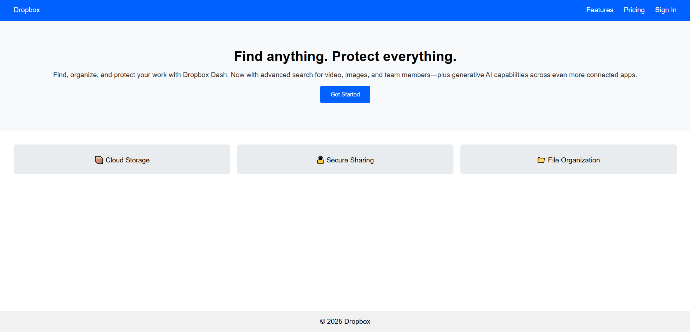
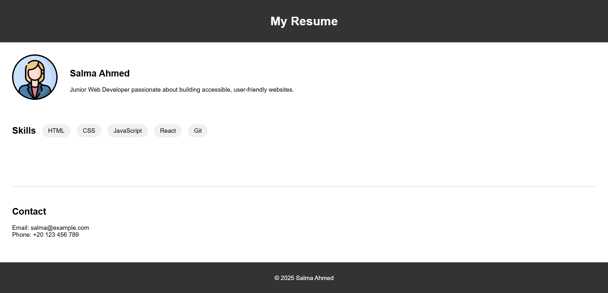

Product Showcase Page
User Story: As a user, I want to browse a page that displays products attractively so I can choose what I like.
Acceptance Criteria:
- Cards with images, title, and price
- Add to cart or view more button
- Responsive layout

Landing Page Clone
User Story: As a developer, I want to clone a famous landing page to learn layout techniques.
Acceptance Criteria:
- Looks visually similar to reference
- Mobile responsive
- Clean, organized HTML/CSS

Responsive Resume Website
User Story: As a user, I want to see a single-page resume site that works on all devices.
Acceptance Criteria:
- Includes sections: bio, skills, contact
- Uses Flexbox or Grid
- Fully responsive

Build Semantic HTML Page
User Story: As a beginner, I want to create a personal webpage using semantic HTML tags, so that my content is structured and accessible
Acceptance Criteria:
- Use semantic tags like <header >, <main>, <footer>, <article>, and <section>
- Include at least 3 sections
- Content must be meaningful

Create Bootstrap Components
User Story: As a frontend developer, I want to use Bootstrap components to build responsive UI so that I can develop modern web interfaces faster.
Acceptance Criteria:
- Use at least 3 Bootstrap components
- Page must be responsive
- Components must be properly aligned